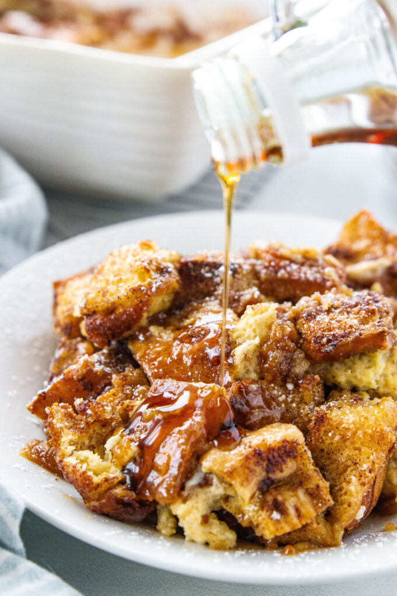

Ingredients
- 1 loaf French bread, cut into 1-inch cubes
- 8 large eggs
- 2 cups whole milk
- 1/2 cup heavy cream
- 3/4 cup granulated sugar
- 2 teaspoons vanilla extract
- 1 teaspoon ground cinnamon
- 1/4 teaspoon ground nutmeg
- Pinch of salt
- 1/2 cup unsalted butter, melted
- 1 cup brown sugar
- 1 cup chopped pecans (optional)
- Powdered sugar and maple syrup for serving
Instructions
- Grease a 9x13-inch baking dish and place bread cubes evenly inside.
- In a large bowl, whisk together eggs, milk, cream, granulated sugar, vanilla, cinnamon, nutmeg, and salt until well combined.
- Pour egg mixture evenly over bread cubes, pressing down lightly to help bread absorb custard. Cover and refrigerate for at least 2 hours or overnight.
- Preheat oven to 350°F (175°C).
- In a small bowl, mix melted butter, brown sugar, and pecans. Sprinkle evenly over casserole.
- Bake uncovered for 45–50 minutes, or until golden and set.
- Cool slightly before serving. Dust with powdered sugar and drizzle with maple syrup.